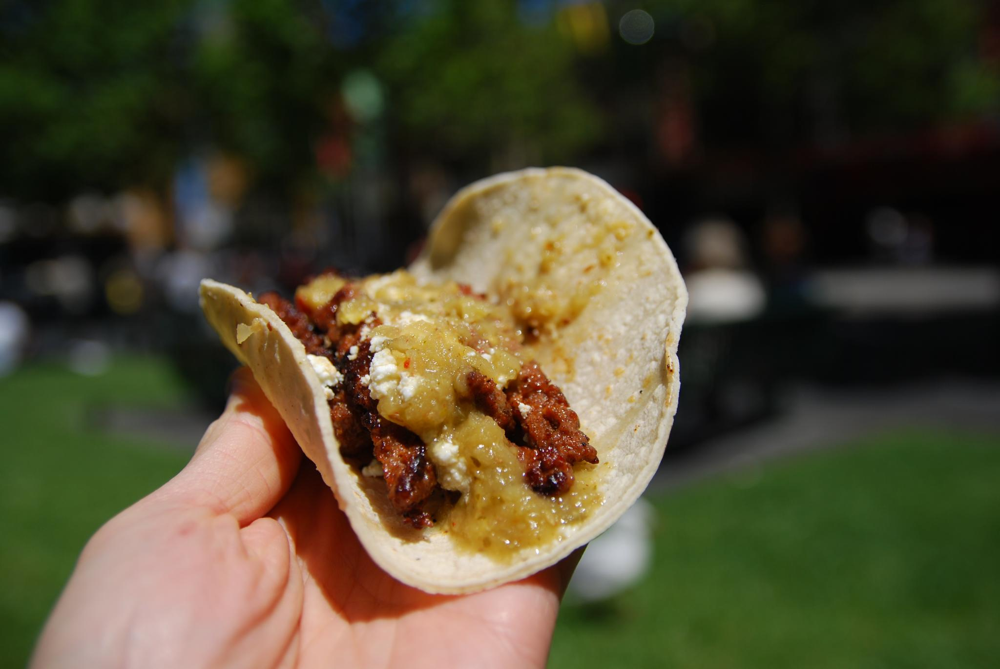

Chorizo Street Tacos

Description
These chorizo tacos use just 5 ingredients and taste amazing. These take me back to living in Mexico and getting tacos from a cart on the corner of a street after school.
Ingredients
- 1 chorizo sausage link, casing removed and meat crumbled
- 2 tablespoons chipotle peppers in adobo sauce
- 4 corn tortillas
- 2 tablespoons chopped onion, or to taste
- 2 tablespoons chopped fresh cilantro, or to taste (optional)
Steps
- Combine crumbled chorizo and chipotle peppers in adobo sauce in a bowl.
- Heat a skillet over medium-high heat; add chorizo mixture and cook until crisp, 5 to 7 minutes. Transfer to plate, reserving grease in the skillet.
- Heat tortillas in reserved grease in the skillet over medium heat until warmed, 1 to 2 minutes per side. Stack 2 tortillas for each taco, then fill with chorizo, onion, and cilantro.